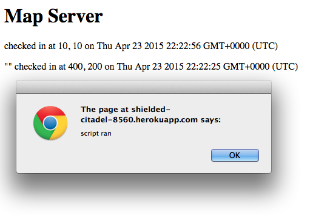
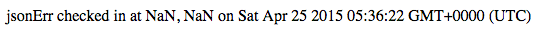

Assessed by Jacob Watton
This assessment tests the security of the Marauder's Map web application developed by NZarilli. Ths application is meant to show the user's location and other locations that have been checked in as well as distances from those other checkins by providing an API for other developers to submit their location and retrieve others'locations and distances from said locations. The application also provides a service to search other users by username. There are several vulnerabilities in this application which I will explore and provide solutions for. My main focus is security and privacy issues.
In order to find the security vulnerabilities in this application, I first performed attacks without reading the source code. Such attacks included cross site scripting and erroneous input. I then read through the source code for the application. This revealed some basic errors in security. I then used curl in order to test the database entries. After this, I ran the application using a proxy from burpsuite to find erroneous input flaws.
The main problem in this application is there is no sanitization on user input making it extremely vulnerable to XSS and bypassing field restrictions. This could allow attackers to run a script on a user's page and possibly access secret data or even crash the server.
curl --data "login=<script>alert('script ran')</script>&lat=222&lng=111" https://shielded-citadel-8560.herokuapp.com/sendLocation, the script was entered as the username, so if there were to be an actual, potentially dangerous script there, it would run whenever the Get request is called from the API. The result:  curl --data "login=jsonError&lat=flip&lng=flop" https://shielded-citadel-8560.herokuapp.com/sendLocation, the database accepted that entry and output There are some huge vulnerabilities in this web application. The main issue at the moment is the lack of sanitization of input to the database allowing XSS and unwanted API calls from unknown sources. Furthermore, the application accepts bad input and allows access to the database. If the vulerabilities listed above or fixed, the site will be less vulnerable. I would charge $500 dollars to fix these vulnerabilities.